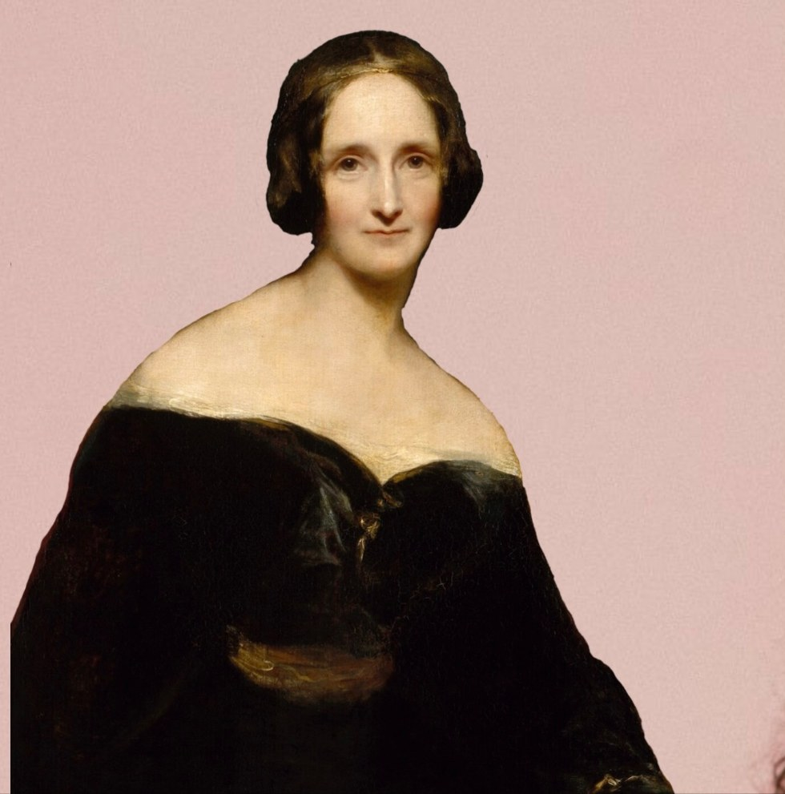

A story-first approach to science, math & history
A story-first approach to science, math & history
Each episode opens with one scene from a classic book, explains the real science or history hidden inside it, and finds the same idea in today's world.
Frankenstein · Mary Shelley
The concept: Galvanism, early experiments that used electricity to make the muscles of dead animals move.
Literary technique: Write here.
Modern echo: Write here.
Synthesis: Write here.
Sources: Write here.
The transcript will be added after recording.
Flowers for Algernon · Daniel Keyes
The concept: Write here.
Literary technique: Write here.
Modern echo: Write here.
Synthesis: Write here.
Sources: Write here.
The transcript will be added after recording.
Book to be announced
Book to be announced
Book to be announced
A podcast made by students, for students: short, clear and backed by real sources.
Each episode takes about ten minutes, perfect for a break or the bus ride home.
Learn literature and science or history together, and see how they connect.
Read along with every episode to follow easily and build your English vocabulary.
Every idea is checked against academic research, listed in the show notes.
Get new angles for literature essays, class discussions and projects.
Watch on your phone or laptop, whenever you want, at no cost.
Every episode follows the same five research steps, so each connection is checked, not guessed.
Choose a passage from a classic English or American text that points to something outside literature.
Investigate the real science, math or history behind the scene using credible sources.
Read what literary critics and the author's own writing say, so the analysis stays grounded.
Look for the same pattern in pop culture or a non-English literary tradition.
Explain how the scene, the concept and the echo all reflect one underlying pattern.
Both the book and the science are explained accurately.
The connection between them is real, not random.
Together they reveal a new idea neither shows alone.
Take a 2-minute quiz before you watch, then again after. See how much you learned, and help our research.